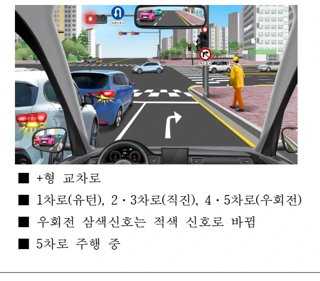

792. Hai cách lái xe nào là nguy hiểm nhất khi rẽ phải trong tình huống sau?

- ①Tạm dừng trước vạch dừng, sau đó chờ đến khi đèn 3 màu chuyển sang đèn rẽ phải.
- ②Dù là sau khi đèn 3 màu chuyển sang mũi tên rẽ phải màu xanh thì vẫn phải kiểm tra tình hình phía trước rồi mới rẽ phải.
- ③Dù đèn 3 màu rẽ phải là màu đỏ, nhưng nếu không có người đi bộ thì tạm dừng rồi từ từ rẽ phải.
- ④Rẽ phải và không cần chú ý đến vạch sang đường dành cho người đi bộ xuất hiện ở ngay đường bên phải.
- ⑤Chú ý người đi bộ có thể bất ngờ lao ra vạch sang đường dành cho người đi bộ từ vỉa hè bên phải.
Xem đáp án
Đáp án
③ Dù đèn 3 màu rẽ phải là màu đỏ, nhưng nếu không có người đi bộ thì tạm dừng rồi từ từ rẽ phải.
④ Rẽ phải và không cần chú ý đến vạch sang đường dành cho người đi bộ xuất hiện ở ngay đường bên phải.
Căn cứ
Trong số các tín hiệu của phương tiện, tín hiệu màu đỏ có nghĩa là ô tô và ngựa phải dừng ngay trước vạch dừng, lối qua đường dành cho người đi bộ hoặc giao lộ. Khi một phương tiện muốn rẽ phải, phương tiện đó phải dừng ngay trước vạch dừng, lối qua đường dành cho người đi bộ hoặc ngã tư rồi rẽ phải mà không cản trở giao thông của các phương tiện khác đang đi theo tín hiệu. Tuy nhiên, ô tô và ngựa không thể rẽ phải khi đèn rẽ phải ba màu có màu đỏ. Vì vậy, nếu đèn rẽ phải ba màu tại ngã tư có màu đỏ thì phải dừng lại trước vạch dừng và đợi cho đến khi đèn chuyển sang mũi tên xanh. Ngoài ra, cần chú ý đến người đi bộ có thể nhảy ra khỏi vỉa hè bên phải hoặc giữa phía trước và phía sau của xe đỗ bên cạnh cũng như người đi bộ trên phần đường dành cho người đi bộ qua đường ngay sau khi rẽ phải.
Phần căn cứ là bản dịch máy để tham khảo.